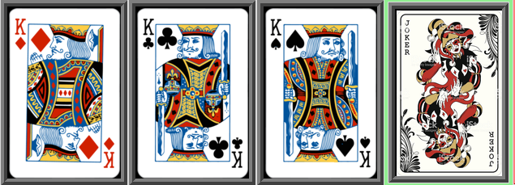
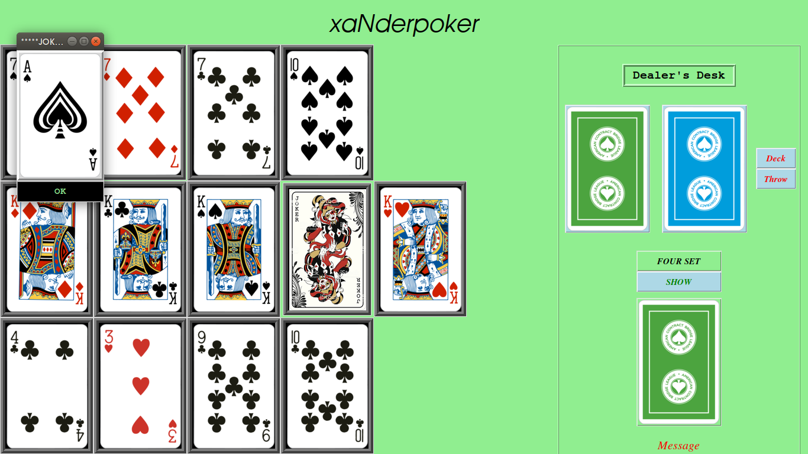
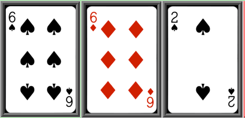

Deck:A standard 52 card deck with 1 Joker.
Division:Each Player is dealt with 13 cards each.
This is a two player game, one pc will be server and other pc will be client.
Both players must connected through a lan or wi-fi to play the game using the IPv4 addresses
Both players will try to accomplish the following goals to win the game.
Your goal is to form a 4, 3, 3, 3 set identical cards with same number or face.
Here is an example:
4 set:Aces
3 set:Kings
3 set:Two Number Cards
3 set:Six Number Cards
4 set:Ten Number cards
3 set:Seven number cards
3 set:Three Number Cards
3 set:Nine Number Cards
Joker can be used as an alternate card to complete the 3 card set.
Here is an example:
Below shown is a 3 set of seven number cards.But we have joker as an alternative card to complete the 3 set.
Any of the below 3 card sets can be used to form a 3-set.Both are acceptable.
Unlike 3-card set, 4-card set must be pure, that means it must not contain any Joker.
For example:
Below shown 4-set is acceptable.
Below shown set is not a 4-set, becuase it contains a Joker.

Unlike the normal joker, the game contains a secondary joker.
But the secondary joker is enabled only
if a player completes the 4-set.
The secondary joker may be any card in the 52 cards.
You can see the secondary joker after completing the 4-set.
When you complete the four set and press the four-set button a window will show you the secondary joker.
You can see the secondary joker after completing the four-set and then pressing the Four Set button in the Dealer's Frame.

Now you can use all cards having Ace or A as jokers.
That means every card having the number or face of the secondary joker can be used as a joker.
For Example:
Ace is the seconday joker in the following game and can be used to complete a 3-set.
Two is the seconday joker in the following game and can be used to complete a 3-set.

Jackie is the seconday joker in the following game and can be used to complete a 3-set of number 10.
Here there are two secondary jokers and a normal card.That means the two secondary jokers will act as alternative for the rest two cards.